Key Topic 3: The search for peace, 1973-1995
Student Workbook
| Progress & Assessment Tracker | Do Now | Level | Teacher Comment |
|---|---|---|---|
| KT3.1: Diplomatic negotiations, 1974–1979 | Do Now: / 10 | ||
| KT3.2: The Palestinian Issue, 1974–1993 | Do Now: / 10 | ||
| KT3.3: Attempts at a solution, 1988–1995 | Do Now: / 10 | ||
| Final Unit Grade: |
This section tests your understanding of change, continuity, and causation across 800 years of British medicine.


Style: Contextual Cloze
Fill in the blanks using the vocabulary words below.
_________________________________________________________
_________________________________________________________
The Yom Kippur War of October 1973 was a military conflict that triggered a global economic and geopolitical revolution. Alarmed by the massive US arms airlift to Israel (Operation Nickel Grass), the Arab members of OPEC (Organization of the Petroleum Exporting Countries) enacted the "Oil Weapon." They placed a total oil embargo on the United States, Denmark, and the Netherlands, while cutting production for other Western nations by 25%. This move had a devastating, cascading impact on the global economy. The price of crude oil quadrupled in a matter of months, skyrocketing from $3 to $12 a barrel. Western industrial nations, highly dependent on cheap oil, plunged into a deep economic crisis characterized by soaring inflation (rising prices) and high unemployment. As oil prices rose, production costs increased, making goods more expensive; consequently, consumers bought fewer items, leading to factory bankruptcies and mass layoffs.

For the superpowers, the crisis changed the calculation of Middle Eastern diplomacy. The Yom Kippur War had brought the United States and the Soviet Union to the brink of a nuclear confrontation. The United States, badly hit by the embargo, now had a powerful financial incentive to broker a lasting peace between Israel and its Arab neighbors to ensure the stable flow of Middle Eastern oil. Furthermore, US policymakers wanted to use diplomatic negotiations to pull Egypt out of the Soviet sphere of influence. Because Egypt and Syria refused to meet face-to-face with Israeli officials, US Secretary of State Henry Kissinger stepped in as a mediator. Kissinger pioneered a form of negotiation known as "shuttle diplomacy," flying back and forth between Cairo, Damascus, and Tel Aviv for two months to relay messages, draft proposals, and bridge the deep psychological divide between the hostile states.
Q1. How did the 1973 Yom Kippur War change the diplomatic calculations of the United States?

Kissinger’s efforts produced three highly important interim agreements. The Sinai I Agreement (January 1974) saw Israeli forces pull back from the west bank of the Suez Canal, creating a UN-patrolled buffer zone. The Golan Accord (May 1974) brokered a cease-fire line on the Golan Heights, with Israel withdrawing from Quneitra. The Sinai II Agreement (September 1975) saw Israel surrender the strategic Gidi and Mitla passes and the vital Abu Rudeis oil fields to Egypt. Crucially, the US established manned early-warning electronic monitoring stations in Sinai to guarantee compliance. A direct consequence of Kissinger's Sinai I agreement was the clearing of the Suez Canal. The canal had been blocked since the 1967 Six Day War by sunken ships and landmines. On 5 June 1975—exactly eight years to the day after its closure—President Anwar Sadat officially reopened the Suez Canal to international trade, providing a major boost to the Egyptian economy.
Q2. What was the result of Henry Kissinger's Sinai II Agreement (September 1975)?
By 1977, the momentum of Kissinger’s shuttle diplomacy had stalled. In May 1977, the right-wing Likud bloc came to power in Israel, with Menachem Begin installed as Prime Minister. Begin firmly believed in Israel’s biblical claim to the entire Land of Israel, including the West Bank. Most observers assumed Begin's election would end all hopes of peace.

However, Anwar Sadat was facing severe internal pressures, a failing economy, and food riots in Cairo. Sadat realized only a dramatic, direct gesture could break the diplomatic deadlock. On 19 November 1977, Sadat’s presidential plane landed at Ben Gurion Airport in Israel. The following day, he addressed the Israeli Knesset, offering Israel complete recognition and permanent peace in exchange for complete Israeli withdrawal from all occupied Arab lands. By mid-1978, direct talks between Egypt and Israel had once again broken down over Begin’s refusal to dismantle Jewish settlements in the Sinai. To rescue the process, US President Jimmy Carter took a massive political risk, inviting both Sadat and Begin to the presidential retreat at Camp David, Maryland, for face-to-face negotiations.
Q3. What dramatic gesture did Anwar Sadat make on 19 November 1977 to break the diplomatic deadlock?

For 13 days, Carter acted as a tireless mediator. The grueling summit resulted in the signing of the Camp David Accords on 17 September 1978. Framework 1 addressed the wider Palestinian issue, agreeing to a five-year transitional period of autonomy for the West Bank and Gaza Strip. Framework 2 outlined a bilateral peace treaty: Israel agreed to a phased, complete withdrawal from the Sinai Peninsula, and Egypt agreed to normalise relations. On 26 March 1979, Begin, Sadat, and Carter signed the formal Treaty of Peace between Egypt and Israel (the Treaty of Washington). Israel returned the entire Sinai Peninsula to Egypt, which became demilitarised. In return, Egypt officially recognized Israel’s right to exist, becoming the first Arab nation to do so. The Suez Canal and the Straits of Tiran were permanently open to Israeli maritime shipping.
Q4. Outline the key terms of Framework 2 of the 1978 Camp David Accords.

While celebrated in the West, the peace treaty triggered a massive geopolitical backlash in the Middle East. The Arab League expelled Egypt for abandoning the Palestinian cause. Tragically, on 6 October 1981, Anwar Sadat was assassinated by radical Islamic militants within the Egyptian army who opposed his peace with Israel. Begin also faced furious opposition from hardline settlers, but the Knesset approved the treaty with a massive majority of 84 votes to 19.
Q5. What was the tragic personal consequence for Anwar Sadat following the signing of the peace treaty?
Q6. Explain one consequence of the 1973 Oil Crisis for diplomatic negotiations in the Middle East. (4 marks)

Style: Vocabulary Mapping
Write a historically accurate sentence connecting two terms from the glossary box below.
Following the 1973 Yom Kippur War, the Palestine Liberation Organisation (PLO) sought to capitalize on the shifting geopolitical landscape to advance its diplomatic standing. On 13 November 1974, PLO Chairman Yasser Arafat made a historic address to the United Nations General Assembly in New York. This invitation was highly significant, representing the first time a representative of a non-state national movement was permitted to address the UN General Assembly plenary. Arafat, who delivered his speech wearing his signature checkered keffiyeh and olive-green uniform, famously concluded his remarks with a powerful metaphorical warning: "I have come bearing an olive branch and a freedom fighter's gun. Do not let the olive branch fall from my hand."

This dual-track message signaled that while the PLO was prepared to engage in international diplomacy to secure a sovereign Palestinian state, it would not abandon its armed struggle if diplomatic avenues were blocked. The diplomatic offensive yielded immediate results at the UN. Resolution 3236 formally recognized the inalienable rights of the Palestinian people to self-determination, and granted the PLO permanent Observer Status. At the Arab League Summit in Algiers, the PLO was officially recognized as the "sole legitimate representative of the Palestinian nation." Following its bloody expulsion from Jordan during the "Black September" civil war of 1970, the PLO relocated its central leadership, military apparatus, and thousands of fighters to Lebanon. Lebanon was an ideal haven: its central government in Beirut was weak, and the country already hosted over 400,000 Palestinian refugees living in camps.
Q1. What was the significance of UN Resolution 3236 (November 1974) for the PLO?

By the mid-1970s, the PLO had established a powerful "state-within-a-state" in southern Lebanon, widely known as "Fatahland". The PLO operated its own checkpoints, collected taxes, ran hospitals, and established military training camps. From these bases, PLO guerrilla fighters launched cross-border raids and fired Katyusha rocket barrages into northern Israel, terrorizing the civilian settlements of the Galilee region. On 11 March 1978, a Fatah commando unit launched the Coastal Road Massacre, hijacking a civilian bus and engaging in a gun battle that resulted in the deaths of 37 Israeli civilians. In direct retaliation, Prime Minister Menachem Begin ordered the IDF to launch Operation Litani on 15 March 1978.
Q2. What was 'Fatahland' and how did it threaten Israeli security?

Over 26,000 IDF troops invaded southern Lebanon, occupying a 10-kilometer-wide security strip. The UN established the United Nations Interim Force in Lebanon (UNIFIL) to confirm the Israeli withdrawal. Israel withdrew but left control of the buffer zone to a friendly, pro-Israeli Christian militia known as the South Lebanon Army (SLA). The UNIFIL buffer failed to stop the conflict. The final trigger for full-scale war occurred on 3 June 1982, when the Abu Nidal Organization shot and critically wounded Shlomo Argov, Israel’s ambassador to Great Britain. Although British intelligence confirmed the PLO was not responsible, Israeli Defense Minister Ariel Sharon used the assassination attempt as the necessary pretext to launch a long-planned, total invasion of Lebanon: Operation Peace for Galilee.
Q3. What pretext did Israeli Defense Minister Ariel Sharon use to launch Operation Peace for Galilee in June 1982?

On 6 June 1982, Israeli forces launched a massive armored invasion. Ariel Sharon secretly harbored much larger geopolitical ambitions: to completely destroy the PLO in Lebanon, defeat Syrian forces, and install a pro-Israeli Christian government in Beirut led by Maronite leader Bashir Gemayel. By mid-June, Israeli forces surrounded Lebanon's capital, trapping Yasser Arafat and 15,000 PLO fighters in West Beirut. For over two months, Israel subjected the city to relentless bombardments. To prevent total destruction, a multinational peacekeeping force supervised the evacuation of Yasser Arafat and over 14,000 fighters by ship to Tunis, Tunisia.
Q4. What were Ariel Sharon’s larger geopolitical ambitions behind the 1982 invasion of Lebanon?
Having successfully expelled the PLO, Israel's close Maronite ally, Bashir Gemayel, was elected President of Lebanon. However, on 14 September 1982, Gemayel was assassinated in a massive bomb blast by Syrian agents.

In response to the assassination, the IDF occupied West Beirut. On 16 September 1982, Israeli forces surrounded the Palestinian refugee camps of Sabra and Shatila. Claiming PLO terrorists remained inside, Ariel Sharon authorized the Lebanese Christian Phalangist militias to enter the camps to clear them. Fueled by anger over the death of Gemayel, the Phalangists systematically slaughtered unarmed civilians. While the IDF held the perimeter and illuminated the night skies with flares, the militias murdered between 800 and 3,500 people. The revelation of the atrocities triggered immediate, furious international condemnation. The extraparliamentary peace movement "Peace Now" organized a protest of 400,000 Israelis in Tel Aviv. The Kahan Commission concluded that Defense Minister Ariel Sharon bore "personal, indirect responsibility" for the tragedy. He was forced to resign.
Q5. Describe the events and consequences of the Sabra and Shatila massacre in September 1982. (4 marks)

While the PLO leadership remained isolated in Tunis, the core of the Palestinian struggle shifted back to the occupied territories. On 8 December 1987, an Israeli military truck collided with a civilian car, killing four Palestinians. The local population erupted in massive demonstrations that swept across Gaza and the West Bank, marking the start of the First Palestinian Intifada ("The Shaking Off").
Q6. What event marked the start of the First Palestinian Intifada in December 1987?

Unlike the PLO operations, the First Intifada was a grassroots, popular civilian uprising utilizing non-violent civil disobedience (strikes, boycotts) alongside low-level street violence. The iconic visual of the Intifada consisted of Palestinian youth throwing stones at heavily armored Israeli tanks. Israeli Defense Minister Yitzhak Rabin responded with a severe "Iron Fist" policy, ordering the IDF to "break the bones" of demonstrators. However, television cameras broadcasted graphic footage of heavily armed soldiers beating stone-throwing children across the globe. For the first time, global public sympathy shifted decisively toward the Palestinian cause, severely damaging Israel’s international moral standing.
Q7. How did the First Intifada shift global public sympathy toward the Palestinian cause?
| For the PLO | For Israel | The Rise of Hamas |
|---|---|---|
| Forced Yasser Arafat to renounce terrorism and officially accept the two-state solution (1988) to retain leadership. | Convinced Yitzhak Rabin and military planners that there was no purely military solution to the Palestinian issue. | Formed in 1987 as a rival to the PLO, Hamas rejected compromises and conducted violent armed attacks against Israelis. |
GCSE history examiners actively look for clear, sophisticated written expression that demonstrates analytical links between historical causes, events, and consequences.
Q8. Write a narrative account analysing the key developments of the PLO in Lebanon in the years 1970–82. (8 marks)
Style: Mini-Frayer Model
Complete the Frayer Model for the term: UNLU
| Definition | Historical Example |
| Non-Example / Sketch | Your own sentence |
By late 1988, PLO Chairman Yasser Arafat realized that the political landscape was shifting beneath his feet. The First Palestinian Intifada had been launched and coordinated by grassroots local committees on the ground, bypassing the traditional PLO leadership isolated in Tunis. Arafat faced a major dilemma: his leadership was being rapidly overshadowed by new, highly popular underground leaders in the Unified National Leadership of the Uprising (UNLU) and radical Islamist groups like Hamas and Islamic Jihad.

To regain political control, Arafat enacted a historic shift in PLO strategy. In November 1988, the Palestinian National Council officially accepted the principles of partition and a two-state solution—officially recognizing Israel’s right to exist alongside a sovereign, independent Palestinian state in the occupied territories. In December 1988, on the strict insistence of the United States, Arafat delivered a historic speech to a special session of the UN General Assembly in Geneva. In this speech, Arafat explicitly renounced and condemned all forms of terrorism. This met the long-standing US conditions for official diplomatic contact, forcing the Reagan administration to open formal diplomatic talks with the PLO.
Q1. How did Yasser Arafat enact a historic shift in PLO strategy in late 1988?
The international geopolitical order was completely transformed between 1989 and 1991. The dissolution of the Soviet Union (USSR) in December 1991 brought an end to the Cold War and fundamentally altered the balance of power in the Middle East.

The collapse of the USSR was a devastating blow to the PLO, which lost its primary funding and diplomatic backing. Over 200,000 Soviet Jews migrated to Israel, leading to the expansion of Jewish settlements in the West Bank and displacing Palestinian workers. Arafat realized he had to secure a deal immediately. The end of the Cold War also meant the US emerged as the sole global superpower and used its leverage, threatening to withhold a $10 billion loan guarantee, to force Israel's Prime Minister Yitzhak Shamir to negotiate. In August 1990, Iraqi dictator Saddam Hussein invaded Kuwait, triggering the 1991 Gulf War. Arafat made the disastrous decision to publicly support Saddam Hussein.
Q2. How did the collapse of the Soviet Union in 1991 severely damage the PLO's geopolitical position?

Outraged by Arafat's betrayal, wealthy Gulf Arab states cut off all financial donations. Kuwait expelled over 300,000 Palestinian workers. The PLO was left bankrupt. To stabilize the region, the US and USSR co-sponsored the Madrid Peace Conference in November 1991. While the public talks stalemated, they broke the taboo of direct negotiations. In June 1992, the moderate Labor Party came to power in Israel under Yitzhak Rabin. Rabin authorized secret, back-channel negotiations in Oslo, Norway.
Q3. Why was the PLO left bankrupt and diplomatically isolated following the 1991 Gulf War?
The urgency intensified in April 1993 when Hamas launched its first suicide car bombing. This convinced Rabin that Arafat’s PLO was a moderate alternative. The secret negotiations produced the historic Oslo I Accords, signed on the White House lawn on 13 September 1993. Arafat renounced terrorism and recognized Israel, while Rabin recognized the PLO. An interim Palestinian National Authority (PNA) was established to govern Gaza and Jericho. In October 1994, Israel and Jordan signed a formal Treaty of Peace. King Hussein approached Rabin because Jordan was suffering economically after the Gulf War. US President Bill Clinton promised to cancel Jordan's massive debts if it normalized relations.
Q4. What convinced Israeli Prime Minister Yitzhak Rabin to engage in secret negotiations with the PLO in 1993?

On 28 September 1995, Rabin and Arafat signed the Oslo II Accords, which detailed the expansion of Palestinian self-rule across the West Bank by dividing it into three zones.

While Oslo II was celebrated, the division triggered a massive political backlash. Palestinians were frustrated that the PNA only controlled a fragmented archipelago (Area A), while Israel still controlled 70% of their land (Area C). Hamas launched suicide bus bombings. Right-wing Israelis were outraged by Rabin's concessions.
Q5. Why did the Oslo II Accords trigger a massive political backlash among Palestinians?

On 4 November 1995, Yitzhak Rabin was assassinated at a peace rally in Tel Aviv by Yigal Amir, a radical right-wing Jewish law student. The assassination dealt a fatal blow to the peace process, leaving the "permanent status" issues completely unresolved.
Q6. What event dealt a fatal blow to the peace process on 4 November 1995?
Q7. Write a narrative account analysing the key developments in the peace process between Israel and the Palestinians in the years 1988–95. (8 marks)
The tragic assassination of Rabin highlighted the deep structural flaws of the Oslo Accords. While celebrated internationally as a breakthrough, the agreement was fundamentally ambiguous. It intentionally delayed the most difficult "permanent status" issues—such as the final borders, the status of Jerusalem, the right of return for Palestinian refugees, and the dismantling of Israeli settlements—to a later date. This delay created a dangerous vacuum of uncertainty. Right-wing Israelis viewed any land concessions as a threat to national security and biblical claims, while Palestinian hardliners argued that the PNA had essentially become a subcontractor for Israeli security, failing to deliver true sovereignty or halt settlement expansion. Ultimately, the Accords required a high level of mutual trust that simply did not exist on the ground.
Q8. Explain why the Oslo Accords were considered 'fundamentally ambiguous' and structurally flawed. (12 marks)
Edexcel focuses heavily on the factors that drove medical progress (or held it back). For each factor below, write one specific historical example from this period that either helped or hindered medical progress.
| Factor | Specific Historical Example & Impact |
|---|---|
| Individuals | |
| The Church & Religion | |
| Government & Wealth | |
| Science & Technology | |
| Attitudes in Society | |
| War |